La Torre Eiffel es otro de los lugares famosos de Francia y por supuesto de su capital, París, por ser la estructura más alta de la ciudad pues mide 324 metros de altura. La ubicas en el extremo del campo de Marte a la orilla del río Sena. Es la parada obligada durante tu viaje a París, pues es la infraestructura con más renombre a nivel mundial y por supuesto uno de los sitios turísticos de París por excelencia. Prueba de ello son sus 7.1 millones de visitas por año. Para llegar a ella puedes hacerlo en metro quedándote en la estación Trocadero. Fue inaugurada en 1889 y su construcción estuvo a cargo del ingeniero Gustavo Eiffel. La Torre Eiffel cuenta con tiendas, ascensores, antenas y restaurantes. Es uno de los mejores lugares de Francia que, además, ha servido de inspiración para cineastas y escritores.
 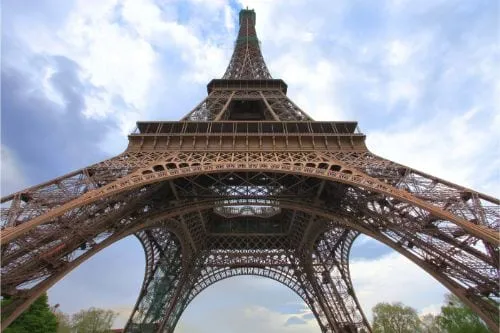
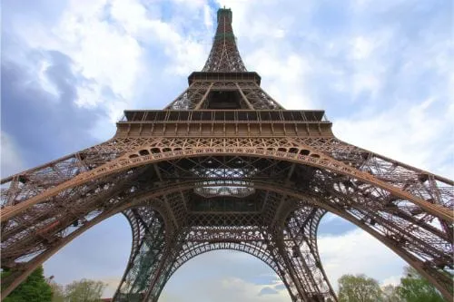
En la 6 Parvis Notre Dame, específicamente en la Place Jean Paul II de París, encuentras la Catedral Notre Dame de culto católico. Su nombre significa “Nuestra Señora” y su construcción fue dedicada a María, la madre de Jesucristo entre 1163 y 1345. Es uno de los lugares famosos de Francia que más visitas tiene de turistas. En el interior de la catedral verás reliquias alusivas a la Pasión de Cristo como la Corona de Espinas, un fragmento de Vera Cruz y uno de los clavos utilizados para la crucifixión. En la Catedral Notre Dame podrás apreciar el campanario donde vivió el mítico Jorobado de Notre Dame y las numerosas gárgolas. Para ir a este lugar puedes tomar la línea 4 del metro y llegar a la estación Cité. La entrada tiene un costo de 8,50 euros. El horario es de lunes a viernes entre las 8:00 a.m. y 6:45 p.m. y los sábados y domingos de 8:00 a.m. a 7:15 p.m.
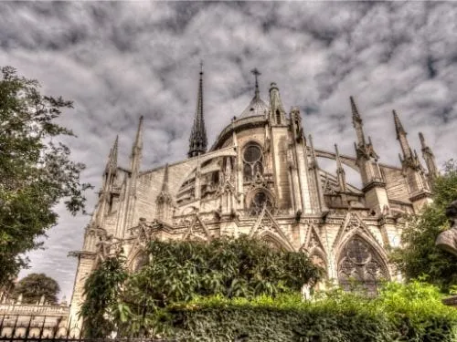
En el centro de Francia consigues el Valle del Loira, un espacio lleno de verdor y castillos renacentistas que lo convierten en uno de los lugares imperdibles de Francia. Se le conoce adicionalmente como el “Jardín de Francia” y cuenta con una herencia arquitectónica significativa proveniente de ciudades como Amboise y Blois. Es famoso a su vez por las bodegas y cultivos de vino blanco como el Chenin y el Sauvignon Blanc. Asimismo fue declarado como Patrimonio de la Humanidad en el año 2000. Sin lugar a dudas quedarás sin palabras cuando te tropieces con estas edificaciones, fortalezas medievales y los jardines de La Touraine, el Berry y el Eure et Louv. Y si de delicadeces se trata, no dejes de probar los quesos crottin de chavignol, el de cabra de selles sar cher o la pirámide. Otra de las actividades recreativas que puedes hacer en el Valle del Loira es la ruta turística de los viñedos, el recorrido en bicicleta y visitar el Parque Natural de la Brenne.
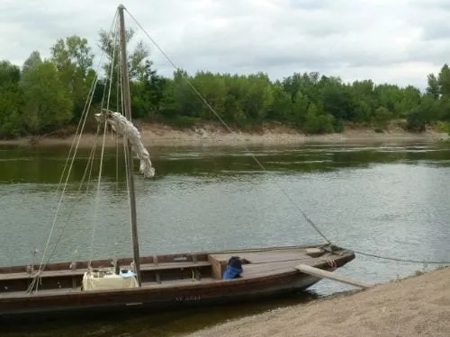 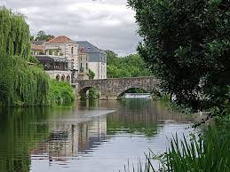Uno de los lugares para visitar en Francia son las Gargantas del Verdon, también conocidas como el Gran Cañón. Es uno de los más hermosos sitios de Europa gracias a que el río Verdon posee un color turquesa- verde que te dejará sin aliento, además de las imponentes montañas que lo rodean. Tiene una extensión de 25 kilómetros y una profundidad de 700 metros, donde podrás pasear en kayak y hacer alpinismo en las paredes de piedra caliza. Además, podrás lanzarte en parapente, hacer balsismo o pescar con mosca. Para acceder a las Gargantas de Verdon puedes hacerlo por varias rutas entre las que destacan el sendero de Martel, el del Imbut, Bastidas y Le Bévédere de Rancoumas por el puente de Tusset. Es importante que antes de emprender tu viaje a Francia para conocer las Gargantas del Verdon sepas que te encontrarás pueblos como Bauduen y Bargéme donde podrás hospedarte, ya que para disfrutar de dicho espacio tendrás que disponer de suficiente tiempo.
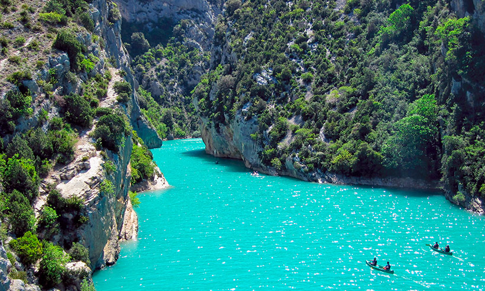 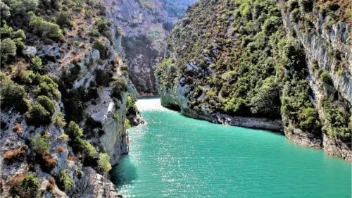No solo la gastronomía, cultura y moda forman parte de la cotidianidad francesa, el país también cuenta con los mejores vinos del mundo. Es por ello que durante tu viaje a Francia no puedes dejar de pasear por los viñedos de las 17 regiones entre las que destacan Burdeos, Borgoña, Alsacia y Provenza. En estos lugares para visitar en Francia podrás probar vinos tintos y rosados, los cuales representan el lema francés el “arte de vivir” que abarca la convivencia y el placer. En estas regiones conseguirás diversas compañías turísticas que te harán un recorrido completo por estos emblemáticos viñedos que en su totalidad abarcan unas 900.000 hectáreas y producen aproximadamente unos 60.000 hectolitros de vino por año. Estos recorridos te costarán unos 126 euros.
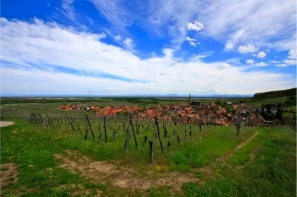 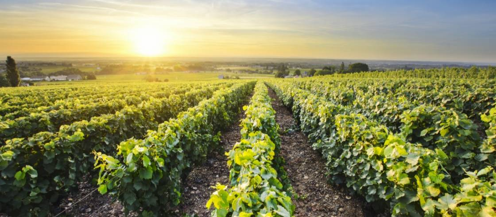En el Parc de la Téte d´ Or 69006 de Lyon conseguirás el Jardín Botánico de esta importante ciudad, el cual representa uno de los atractivos naturales de Francia y una tremenda alternativa para que conozcas innumerables especies naturales en sus ocho hectáreas con 6.500 metros cuadrados de invernaderos. Aquí tienes la oportunidad de ver 15.000 especies botánicas, muchas de ellas en peligro de extinción. Cuenta con jardín alpino, rosaledas, arbustos, arboretum, helechos, peonías, herbarios además de una biblioteca. Está dentro del parque de la Téte d´Or donde tienes a tu disposición un zoológico que alberga animales como tortugas, mapaches, serpientes, cocodrilos, entre otros. Está abierto todos los días del año de 9:00 am a 6:00 pm exceptuando los domingos cuyo cierre es a las 5:00 p.m. Para acceder al Jardín Botánico de Lyon puedes hacerlo por la Rue Duquesne hasta la avenue Vergin caminando desde el centro de la ciudad.
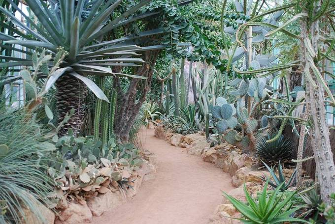 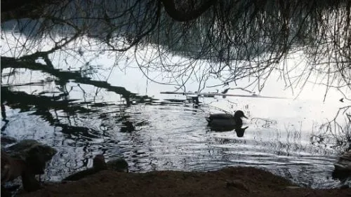